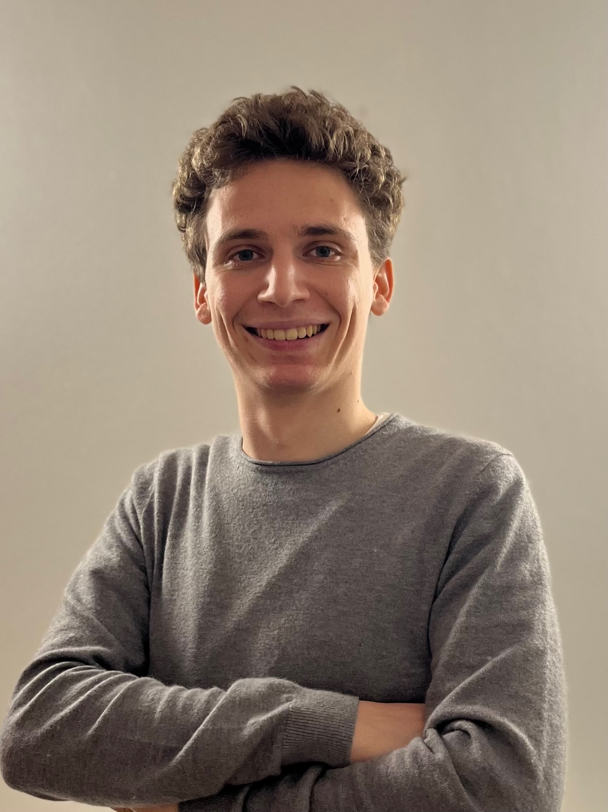

Research:
My primary research focus revolves around advancing models to generate coherent media based on task steps.
Specifically, I specialize in developing ways of generate coherent sets of images to enhance the expierence of users on doing tasks where visual information is key.
In addition to this primary line of research, I am interested in:
- Retrieving moments in videos by voice
- conversational agents
- Fusing image and language models to ease user interaction
Accomplishments & Highlights:
- My team won the Amazon Alexa Prize TaskBot Challenge 2 [Paper]
- Outstanding Formula 1 lap time prediction project, earning top honors as my stream processing course final project!
- Developed an innovative search platform for Polytechnic Institute of Portalegre, earning 19/20 as my undergraduate final project.